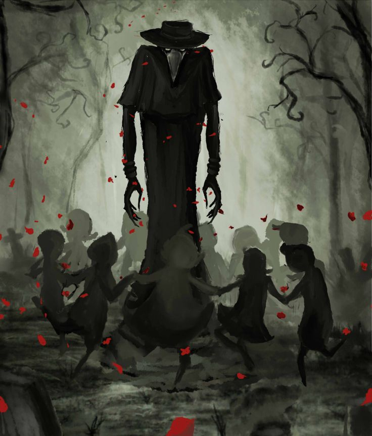

A former doctor with a penchant for leaving his patients on death's doorstep.
Jeremy was first met in sunken temple of Pelor, after the adventurers were sent to discover what
had become of the village children. He is a man with a giant crow's skull for a head and a sickening aptitude
for necromancy.
History
First seen in the Temple of Pelor, Jeremy was discovered soon after the group found Annabelle.
He was found working on an experiment, fusing the bodies of children together to form a golems of flesh,
rather than stone. Along side his medical table where he worked on the temple dias, there was also a deep
pit, filled with a viscous red and black fluid that swellled and seemed to give birth. From the pit
there was born a woman, stunningly beautiful and naked; however she soon escaped through a dimensional doorway.
Jeremy was slain by the the Adventurers and his research was taken into custody by the Order of Doors.